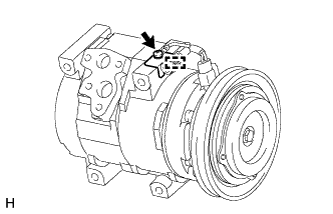
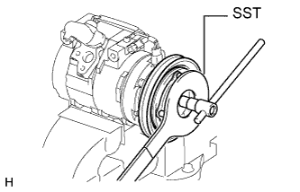

КОМПРЕССОР (для моделей с 5L-E) > РАЗБОРКА |
| 1. СНИМИТЕ КРОНШТЕЙН РАДИАТОРА |
|  |
Снимите зажим.
Выверните винт и снимите кронштейн радиатора.
| 2. СНИМИТЕ ЭЛЕКТРОМАГНИТНУЮ МУФТУ В СБОРЕ |
|  |
Зажмите компрессор системы кондиционирования в тисках.
С помощью SST зафиксируйте ступицу электромагнитной муфты.
Выверните болт и снимите ступицу электромагнитной муфты и шайбу электромагнитной муфты.
 |
С помощью съемника стопорных колец снимите пружинное стопорное кольцо и ротор электромагнитной муфты.
Отсоедините разъем.
 |
С помощью съемника стопорных колец снимите пружинное стопорное кольцо и статор электромагнитной муфты.